CS 463G & CS 663
(Intro to) AI
Lecture 37: Transformers
Fall 2026
A Transformer is a neural-network architecture that uses attention to combine information from different sequence positions, without recurrent state updates.
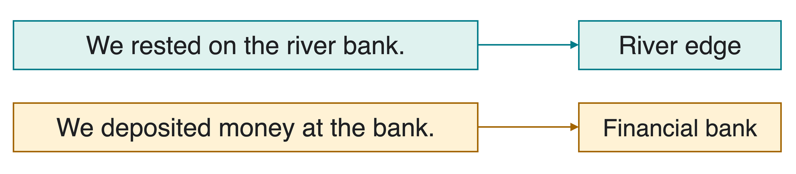
Attention produces a contextual representation: a numeric vector influenced by the surrounding input, not only by the word itself.
Introduced by Ashish Vaswani et al. (2017), Attention Is All You Need.
A recurrent neural network (RNN) passes a hidden state through positions one by one. Attention compares a position directly with other available positions; known positions can be processed together.
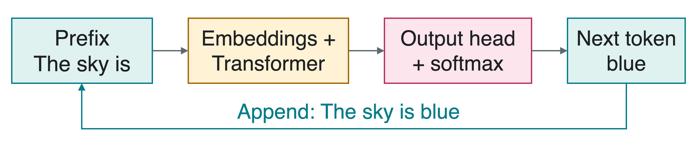
For an autoregressive Transformer, generation still chooses one new token at a time. The prefix is the sequence chosen so far.
Attention returns feature vectors. An output head maps the final representations to next-token scores; softmax normalizes those scores into probabilities.
A token is a text piece, such as a word or subword. An embedding maps its integer ID to a learned vector by looking up a column of a matrix E.
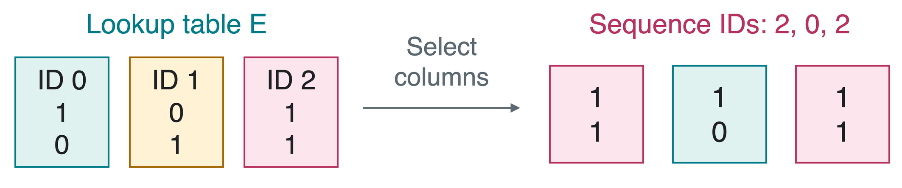
For n positions and embedding dimension d_e, we place one vector x_i in each column:
X=[x_1\ \cdots\ x_n]\in\mathbb R^{d_e\times n},\qquad X=\begin{bmatrix}1&1&1\\1&0&1\end{bmatrix}\text{ in this example}.
The repeated ID has the same lookup vector. Position information and later attention distinguish its occurrences.
Think of retrieving information from a station noticeboard:
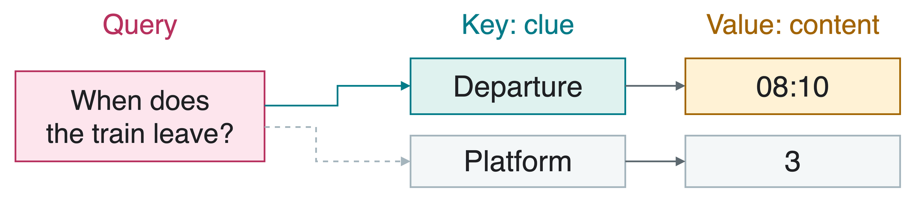
In neural attention, all three are vectors. Query-key matches set weights; those weights mix the values rather than copying one database record.
Let X\in\mathbb R^{d_e\times n} contain the context vectors to read, and X_Q\in\mathbb R^{d_e\times m} the vectors making m queries. A linear projection multiplies vectors by a learned matrix.
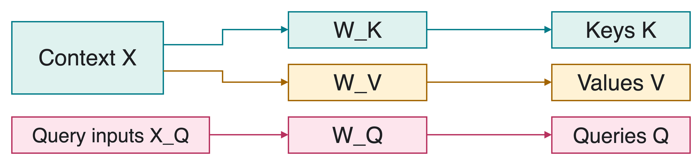
K=W_KX,\qquad Q=W_QX_Q,\qquad V=W_VX.
Keys and queries have d_k features so they can be compared. Values have d_v features; d_v need not equal d_k.
Use already-projected, invented vectors: n=3, d_k=d_v=2, and one query q=(1,0)^T.
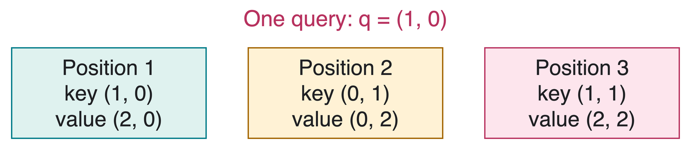
Placing the pairs in corresponding columns gives
K=\begin{bmatrix}1&0&1\\0&1&1\end{bmatrix},\qquad V=\begin{bmatrix}2&0&2\\0&2&2\end{bmatrix}.
We will compare keys, normalize scores, then mix values.
The dot product k_i^Tq compares key k_i with query q=(1,0)^T. Divide by \sqrt{d_k}=\sqrt2 to get a scaled score s_i.
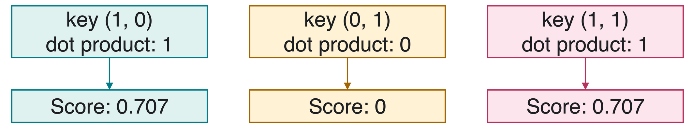
s=\frac{K^Tq}{\sqrt{d_k}}= \begin{bmatrix}1/\sqrt2\\0\\1/\sqrt2\end{bmatrix} \approx\begin{bmatrix}0.707\\0\\0.707\end{bmatrix}.
Why scale? Dot products tend to grow with the number of features. Scaling helps keep the next normalization from becoming excessively sharp.
Softmax converts the n scores into nonnegative weights \alpha_i that sum to 1:
\alpha_i=\frac{e^{s_i}}{\sum_{j=1}^n e^{s_j}}.
For s=(1/\sqrt2,0,1/\sqrt2)^T, the common denominator is approximately 2.028+1+2.028=5.056.
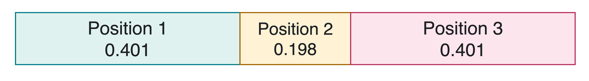
Does the zero score at position 2 mean zero attention weight?
No. e^0=1, so position 2 still gets about 0.198 of the weight.
The output vector o is the weighted sum of the paired values:
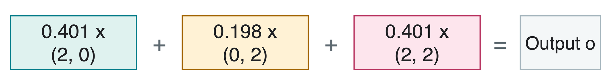
\begin{aligned} o=V\alpha &\approx0.401\begin{bmatrix}2\\0\end{bmatrix} +0.198\begin{bmatrix}0\\2\end{bmatrix} +0.401\begin{bmatrix}2\\2\end{bmatrix}\\[0.3em] &\approx\begin{bmatrix}1.604\\1.198\end{bmatrix}. \end{aligned}
The result blends content from several positions. It is a feature vector, not a selected token ID or a next-token probability distribution.
Keep the keys and values, but use q'=(0,1)^T:
K=\begin{bmatrix}1&0&1\\0&1&1\end{bmatrix},\qquad V=\begin{bmatrix}2&0&2\\0&2&2\end{bmatrix},\qquad d_k=2.
Which positions now match equally well? Compute the scaled scores, weights, and output. You may use e^{1/\sqrt2}\approx2.028.
s'\approx(0,0.707,0.707)^T, so positions 2 and 3 tie.
\alpha'\approx(0.198,0.401,0.401)^T and o'\approx(1.198,1.604)^T.
For q=0, all scores are zero: \alpha=(1/3,1/3,1/3)^T and o=(4/3,4/3)^T.
Let Q=[q_1\ \cdots\ q_m]. Each query gets a column of attention weights in A and a column of outputs in O:
A=\operatorname{softmax}_{\text{columns}}\!\left(\frac{K^TQ}{\sqrt{d_k}}\right), \qquad O=VA.
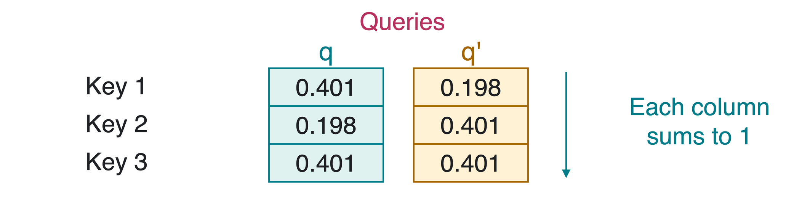
K:d_k\times n, Q:d_k\times m, V:d_v\times n. Thus A:n\times m and O:d_v\times m.
Normalize down each column, over keys for one query. Do not normalize across different queries.
Inputs are already projected. @ means matrix multiplication, and Rows(K) counts key features.
For this two-dimensional score matrix, axis 0 runs down rows: over keys, separately for each query column.
Queries and keys determine weights. Values determine the content combined using those weights.
There are n=10 context positions and m=4 queries. Embeddings have d_e=64 features; keys/queries have d_k=16 and values have d_v=32.
What are the shapes of K,Q,V, of the score/weight matrix, and of the output? Keep one vector per column.
K:16\times10, Q:16\times4, V:32\times10.
K^TQ:(10\times16)(16\times4)=10\times4. Softmax keeps this shape.
O=VA:(32\times10)(10\times4)=32\times4: one output per query.
Self-attention draws queries, keys, and values from the same sequence. Cross-attention uses queries from one sequence and keys/values from another.
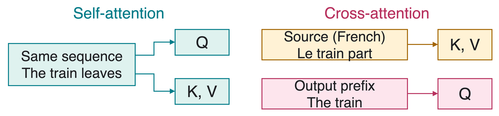
In translation, an encoder represents the input sentence; a decoder builds the output sentence using the earlier output tokens and the encoded input.
Self-attention means X_Q=X, not Q=K=V. Separate learned projections can produce different vectors from the same input.
During training, the full observed sentence is available. Teacher forcing uses its correct earlier tokens to predict each next token.
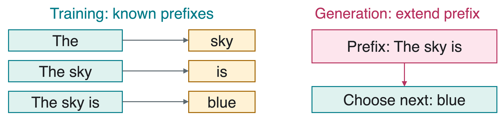
A causal mask blocks attention to later input positions, so a next-token prediction cannot read its own target or later tokens.
Many training positions can run in parallel. Ordinary autoregressive generation still extends the actual prefix one token at a time.
Dense self-attention compares every position with every position, giving n^2 query-key scores for a sequence of length n.
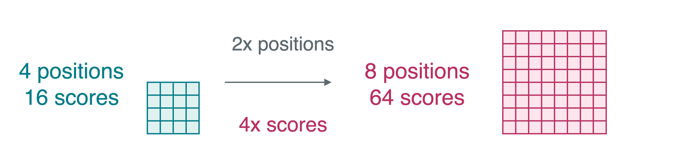
At n=1{,}000, there are 1 million scores; at n=2{,}000, there are 4 million.
Why does doubling the sequence length quadruple the number of scores?
There are twice as many queries and twice as many keys: (2n)^2=4n^2.
Today, positions are columns and softmax normalizes down each column:
O=V\,\operatorname{softmax}_{\text{columns}}\!\left(\frac{K^TQ}{\sqrt{d_k}}\right).
The original paper and common library layouts use rows. Define Q_r=Q^T, K_r=K^T, V_r=V^T, and O_r=O^T:
O_r=\operatorname{softmax}_{\text{rows}}\!\left(\frac{Q_rK_r^T}{\sqrt{d_k}}\right)V_r.
Here Q_r:m\times d_k, K_r:n\times d_k, and V_r:n\times d_v. Normalize across each row, over its n keys.
Same calculation, different storage layout. Do not mix one convention’s formula with the other’s normalization axis.
Library reference: PyTorch scaled dot-product attention.
1. If only V changes, do the attention weights change?
No, if Q and K stay fixed. The weights stay the same, although the output may change.
2. Does self-attention force Q and K to be identical?
No. They come from the same sequence but use separate learned projections.
3. Are attention weights probabilities over the vocabulary?
No. They mix context positions. A language model’s output head predicts vocabulary probabilities.
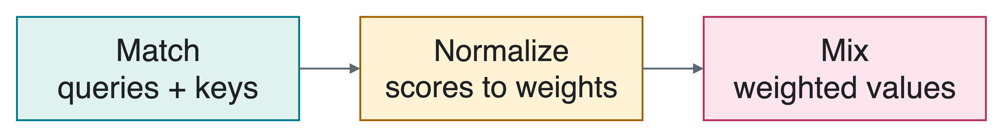
Next: multiple attention heads, position information, and the complete Transformer block.